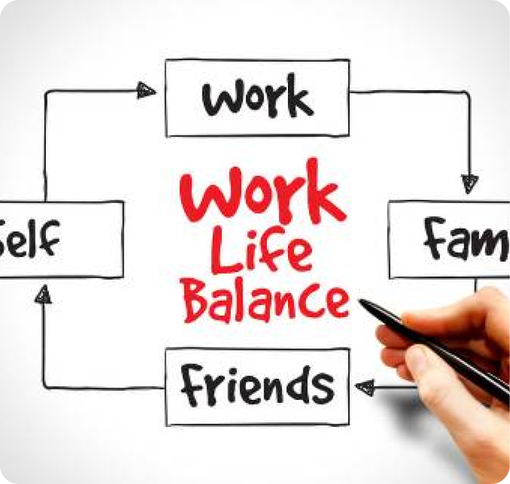
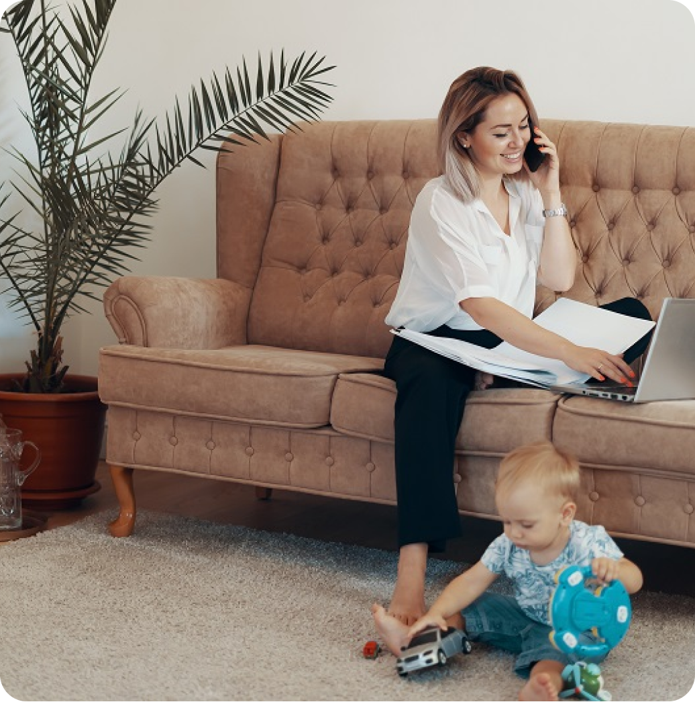
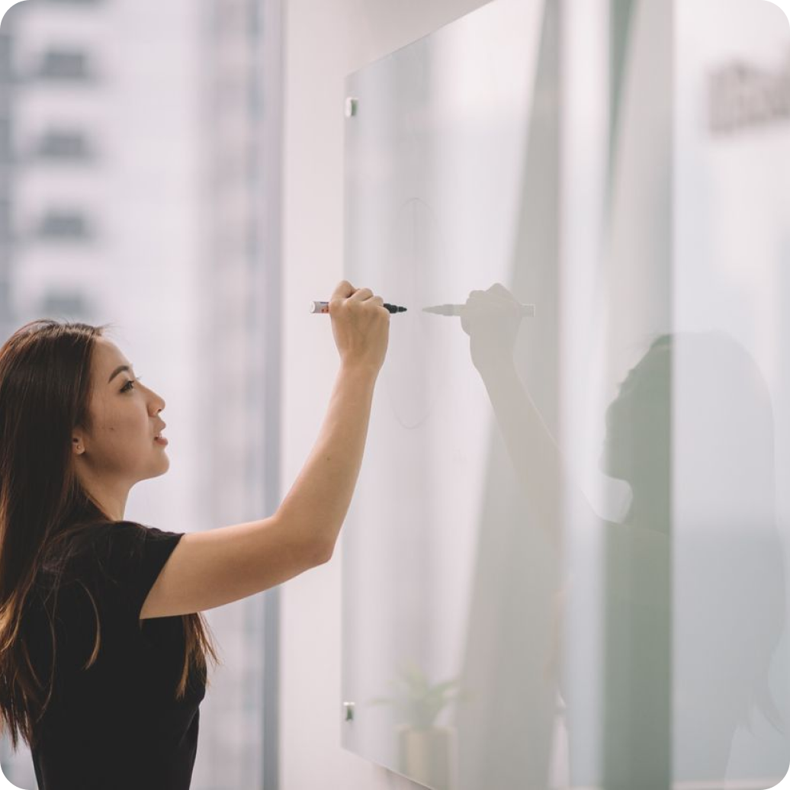

Feminin Force
Home
Artikel
Video
Ruang Karir
Komunitas
Tentang Kami
Kontak & Kerja sama
Profil
RUANG KARIR
“Tingkatkan Karir Anda: Memberdayakan Wawasan Perempuan”
Tips Personal Branding
Tips Menulis CV
Persiapan Wawancara
Strategi Work-Life Balance
WeAreTechWomen | 31 Maret 2023
Apakah bisa para wanita menjadi ibu sekaligus bekerja? Tentu saja, siapa takut!
• 2 hari lalu

LinkedIn / Romy N | 30 Maret 2023
Keseimbangan Kehidupan Kerja
• 3 hari lalu

HBR / Dorie Clark | 30 Maret 2023
Jadi Wanita Karir Sekaligus Ibu Rumah Tangga Bisakah?
• 3 hari lalu

Kumparan.com | 30 Maret 2023
Tips Jadi Ibu Bahagia Dari Perusahaan Ramah Keluarga
• 3 hari lalu
WeAreTechWomen | 31 Maret 2023
Dari Ibu Bekerja Menjadi Ibu Rumah Tangga, Siapa Takut?
• 2 hari lalu
LinkedIn / Romy N | 30 Maret 2023
Tips Ibu Bekerja, Urusan Rumah dan Karir Lancar
• 3 hari lalu
HBR / Dorie Clark | 30 Maret 2023
Studi Ungkap Manfaat Jadi Ibu Bekerja untuk Kesehatan Fisik dan Mental.
• 3 hari lalu
Kumparan.com | 30 Maret 2023
6 Cara Mengatasi Stres pada Ibu yang Bekerja Kantoran
• 3 hari lalu